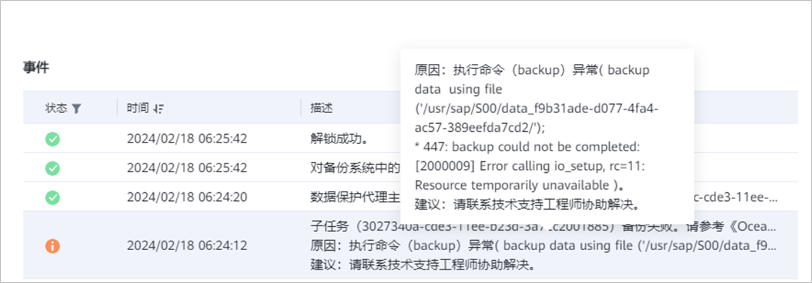

生产环境异步IO请求数达到最大值，导致备份失败
现象描述
备份任务失败，在任务界面可查到如下图的事件失败描述。

可能原因
生产环境异步IO请求数达到最大值，导致备份失败。
处理步骤
登录生产环境，执行
vi /etc/sysctl.conf
命令，在编辑模式查看“fs.aio-max-nr”参数的值。
根据以下场景确认问题产生原因：
当“fs.aio-max-nr”参数异常（如参数值小于参考值或该参数不存在等）时，需要根据
Linux Kernel Parameters
的参数对应参考值（18446744073709551615）重新设置该参数，设置完成后执行
3
。
当“fs.aio-max-nr”参数存在且参数值正常时（参数值参考
Linux Kernel Parameters
中对应的值），请收集日志并联系华为技术支持工程师协助处理。
执行
sysctl -p /etc/sysctl.conf
命令，使配置生效，命令执行完成后重新执行备份。
父主题：
常见问题